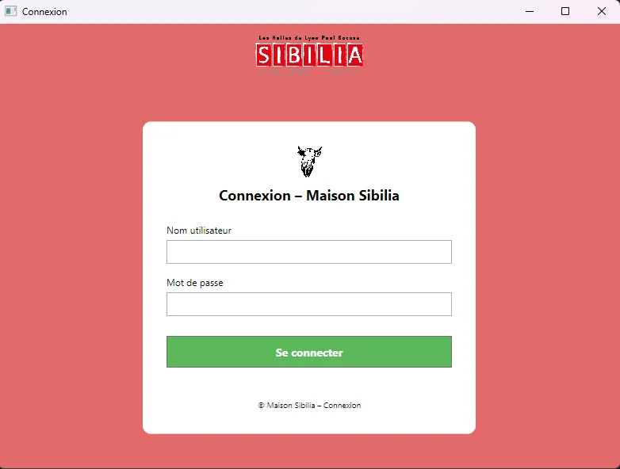

Authentification
Authentication
Connexion sécurisée et gestion des rôles utilisateur.
Secure login and user role management.
Une application desktop de gestion commerciale pour centraliser clients, plats, stocks et commandes d'un service traiteur.
A desktop business management application centralizing customers, dishes, inventory and orders for a catering service.

Sélection du client et des plats avec calcul automatique du total.
Customer and dish selection with automatic total calculation.

Accès aux modules Commandes, Plats et Clients.
Access to Orders, Dishes and Customers modules.

Écran d'authentification de l'application.
Application authentication screen.
Créer une interface desktop claire pour remplacer une gestion dispersée des commandes et fiabiliser les opérations quotidiennes d'un traiteur.
Create a clear desktop interface to replace scattered order management and make a caterer's daily operations more reliable.
L'application devait permettre de retrouver rapidement clients et produits, puis de composer une commande sans erreur de calcul.
The application had to quickly retrieve customers and products, then build an order without calculation errors.
Le code devait rester structuré malgré plusieurs écrans et opérations CRUD, d'où l'utilisation de l'architecture MVVM.
The code had to remain structured across multiple screens and CRUD operations, leading to the use of MVVM.
Connexion sécurisée et gestion des rôles utilisateur.
Secure login and user role management.
CRUD pour les clients, plats, stocks et commandes.
CRUD for customers, dishes, inventory and orders.
Séparation de l'interface, de la logique et des données.
Separation of interface, logic and data.
Filtrage en temps réel pour accélérer les opérations.
Real-time filtering to speed up operations.
Sibilia m'a permis de consolider C#, WPF et la conception d'interfaces, tout en découvrant l'intérêt d'une architecture claire pour faire évoluer une application.
Sibilia helped me consolidate C#, WPF and interface design while discovering the value of a clear architecture for evolving an application.